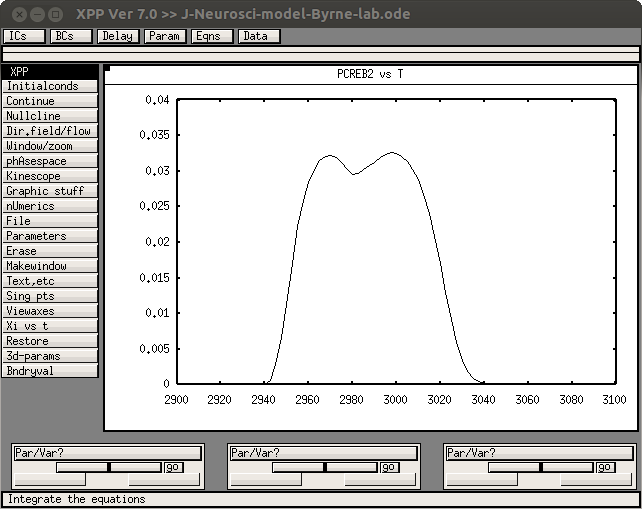

This is the readme for the model associated with the paper: Liu RY, Zhang Y, Baxter DA, Smolen P, Cleary LJ, Byrne JH (2013) Deficit in Long-Term Synaptic Plasticity Is Rescued by a Computationally Predicted Stimulus Protocol J. Neurosci. 33:6944-6949 This is the code the authors used and was contributed by Dr Yili Zhang. It requires xpp by Bard Ermentrout, available for download for many platforms from http://www.math.pitt.edu/~bard/xpp/xpp.html Example use: Example use: Start with XPPAUT with a command like (unix/linux platform) xpp LiuEtAl2013.ode -silent Because XPP code is run in silent mode, a data file will be created in the current folder. After simulation, all the data points of variables in ODE will be automatically output into this data file. Besides the variables in ODE, any parameters or expressions, e.g. pCREB1*CREB2, can be output into the data file by command "aux" e.g., aux 1=pCREB1*CREB2 The default name of data file is output.dat, or it can be changed to any other name by command "@ output=NameofDatafile". "output.dat" can be opened in MicrosoftExcel or any other software for data analysis or graph plotting. --- Example interactive run: Start with XPPAUT with a command like (unix/linux platform) xppaut LiuEtAl2013.ode Change the output variable to PCREB2 and (click on Graphic stuff -> (E)dit curve press enter and then change the y value to PCREB2) and then start: Initalconds -> (G)o If you resize the graph to 2900 to 3100 in the x axis and 0 to 0.04 in the y-axis: Window/zoom -> (W)indow (and then enter the values in the table and press OK) you should have a graph resembling the red trace in Fig. 3D in the paper: 